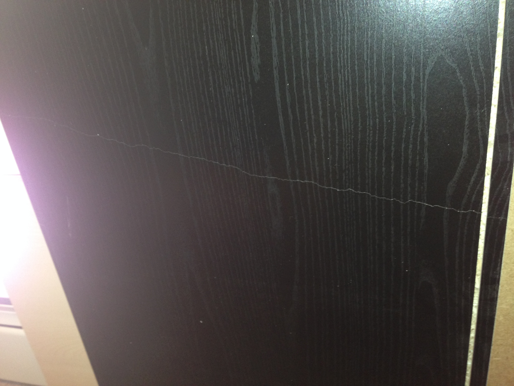
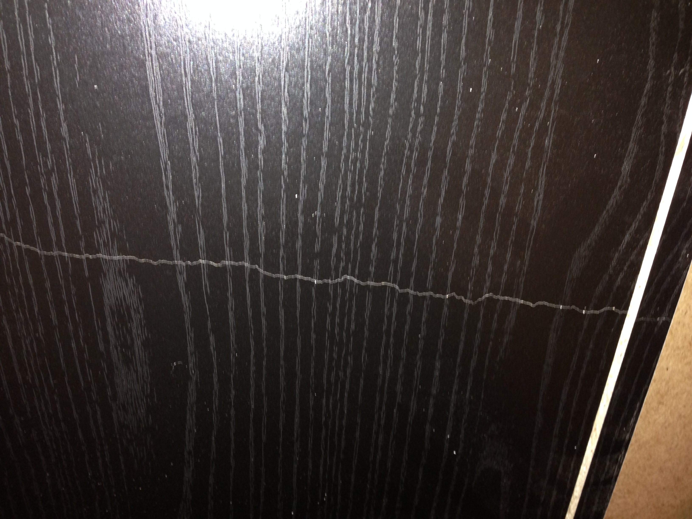
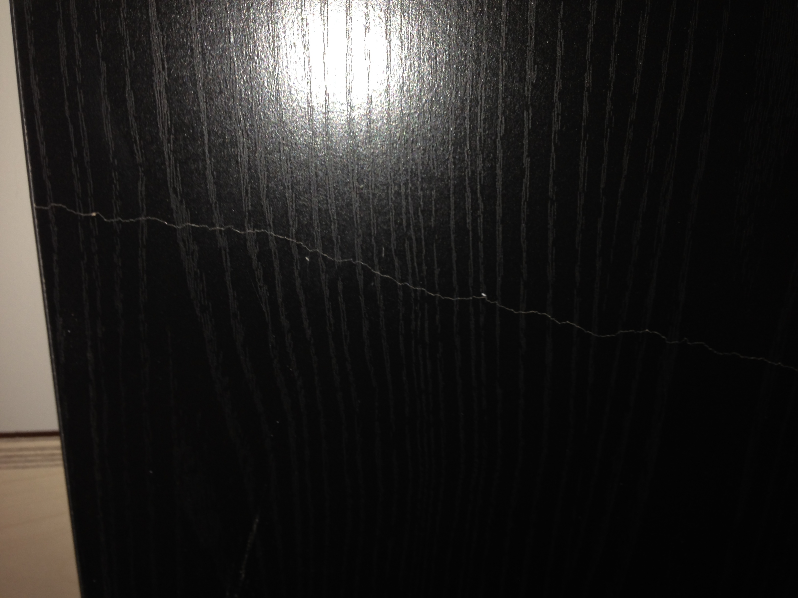
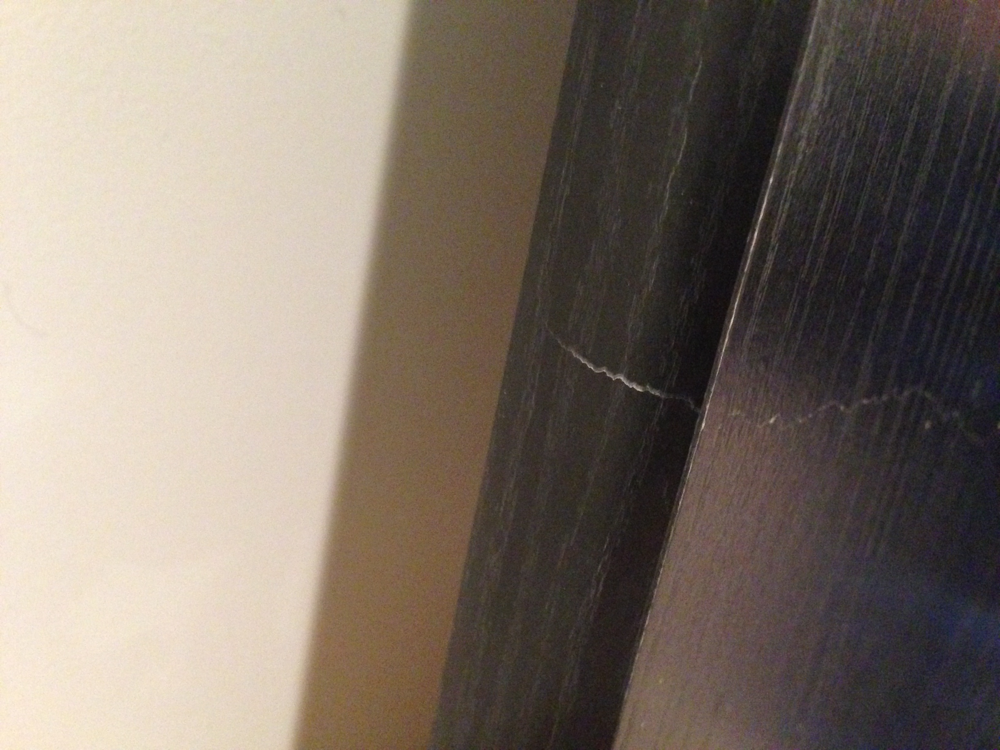
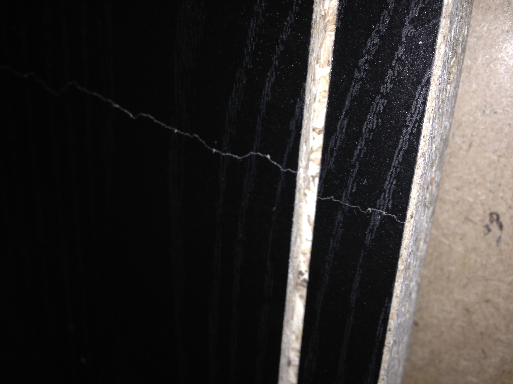

These are images of a crack in the front and underside of the long short dresser. Click any of them to see the image in full size.
This first image shows the crack going across the whole thing.
This shows a closer image the back side.
This shows an image of the crack extending to the front side.
This is shows the crack on the front side of the dresser itself. It looks like it is possible that the crack is structurally deep.
Here is one more image of it extending all the way to the back of the dresser. It's hard to tell if the crack is deep here, or not.
